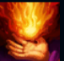
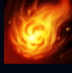
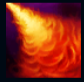
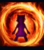
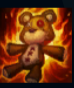

Annie
| Annie The Dark Child | |
|---|---|
| Release date | 21.02.2009 |
| Class | Burst |
| Positions | Middle |
| Resource | Mana |
| Range type | Ranged |
| Adaptive type | Magic |
| Base statistics | |||
| Health | 524 – 2020 | Mana | 418 – 843 |
| Health regen. | 5.5 – 14.85 |
Mana regen. | 8 – 21.6 |
| Armor | 19 – 87 | Attack damage | 50 – 94.71 |
| Magic resist. | 30 – 38.5 | Crit. damage | 175% |
| Move. speed | 335 | Attack range | 625 |
Periculoasă și adorabil de precoce, Annie este o copilă înzestrată cu puteri imense, capabilă să controleze flăcările. Este un mag neobișnuit chiar și pentru ținuturile sălbatice aflate în umbra munților din nordul Noxusului. Afinitatea pentru foc i s-a manifestat de timpuriu prin tot felul de răbufniri emoționale imprevizibile pe care, în cele din urmă, a învățat să le controleze și le numește ''trucuri nevinovate''. Printre giumbușlucurile ei preferate se numără invocarea lui Tibbers, ursul ei de pluș, sub forma unui protector înflăcărat. Încătușată de inocența unei copilării eterne, Annie cutreieră pădurile întunecate pentru a-și găsi noi tovarăși de joacă. |  |
PIROMANIE După ce folosește 4 vrăji, următoarea vrajă ofensivă a lui Annie își va ameți ținta. |
||
|---|---|---|---|---|
 |
DEZINTEGRARE Annie lansează o minge de foc, provocând daune și recuperându-și mana consumată dacă mingea distruge ținta. |
|||
 |
INCINERARE Annie lansează un con de flăcări, provocând daune tuturor inamicilor din zonă. |
|||
|  |
SCUT INCANDESCENT Îi oferă lui Annie sau unui aliat un scut, un bonus la viteza de mișcare și le provoacă daune inamicilor care o lovesc cu atacuri de bază. |
|||
 |
INVOCARE: TIBBERS Annie îl aduce la viață pe Tibbers, ursul ei, provocând daune unităților din zonă. Tibbers poate ataca și incendia inamicii de lângă el. |